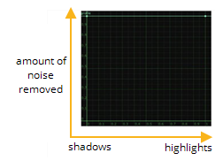
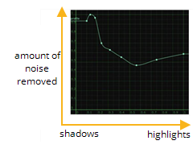
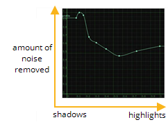
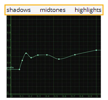
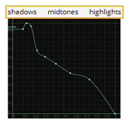

要微调结果:
| 1。 | 设置 去噪量 调整要去除的噪音总量。增加这一点可以消除更多的噪音，或者如果你想保持更多的细节，减少它。值 0 不删除任何噪音。 |
| 2. | 如果去噪图像看起来太锐利，请使用 滚开 调整去噪阈值的平滑度。值 1 等于硬阈值。任何其他值都会在以下之间产生软阈值: |
• 的 去噪量 价值 和
• 的 滚开 价值 乘以 去噪量 .
| 3. | 如果你没有通过调整获得正确的平滑度 去噪量 ,尝试设置 平滑度 一个新的价值。这控制去噪图像的平滑度，影响底层图像，而不是检测到的噪声。在大多数情况下，默认值 1 工作正常。 |
| 4. | 如果结果太平滑，并且调整上述控件没有帮助，请尝试设置 简介 到 自动 。不同于 常数 配置文件，它查看分析区域并消除所有强度的相同数量的噪音，自动配置文件查看整个 轮廓框架 估计噪声轮廓并从阴影、中间色调和高亮区域中移除不同数量的噪声 源 图像。 |
|
 |
 |
| 恒定轮廓。 | 自动轮廓。 |
第一次切换到自动轮廓时，去噪使用当前帧来计算轮廓。如果您想使用不同的框架，您需要擦洗该框架并单击 重新计算配置文件 按钮上 简介 标签。这将更新 轮廓框架 控件，它是只读的。
注意: 去噪总是基于你的噪音配置文件 源 即使你把另一个剪辑附加到 噪音 输入。
| 5. | 您也可以使用上的控件自行调整噪音配置文件 简介 标签。这在两个 常数 和 自动 分析模式。 |
• 去噪在曲线编辑器中显示噪波轮廓曲线。X轴表示图像强度，从左边的暗区到右边的亮区。Y 轴表示移除的相对噪声量。
|
 |
| 噪音轮廓曲线。 |
可以通过将曲线上的点拖动到新位置来手动调整曲线。要向曲线添加更多点, Ctrl / Cmd Alt 单击曲线。
如果您对您的更改不满意，请单击 重置配置文件 将曲线重置为其原始形状 (单击 重置 也有效)。
• 确保你检查 调谐轮廓 启用您的更改。然后，调整 低增益 , 中增益 ,和 高增益 在图像的阴影、中间色调和高光区域中缩放去噪阈值。例如，值 2 将阈值乘以 2。阈值以下的所有内容都被视为噪声并被移除，而阈值以上的所有内容都被保留。
|
 |
 |
|
之后的噪音轮廓
|
之后的噪音轮廓
|
| 6. | 回到了 去噪 标签, 调谐频率 部分允许您在不同的噪声频率中启用、禁用和调整去噪。这允许您选择包含噪音的频率，尽可能多地处理它们，并保持其他频率的细节不变。 |
通常，大多数噪音发生在高频率和中频率，所以通常你可以完全禁用低频率和非常低的频率。使用 增益 滑块用于删除噪音 (通过增加值) 或添加更多细节和噪音 (通过减少值)。
| 7. | 下 调谐频道 ,您可以调整亮度和色度通道的去噪阈值。增加 亮度增益 和 色度 增益 值删除更多的噪音，或减少它们删除更少。 |
| 8。 | 最后，如果你喜欢，你可以使用 色度混合 将去噪后的色度与图像的原始色度混合。然而，这个值很少需要编辑。 |
|
|